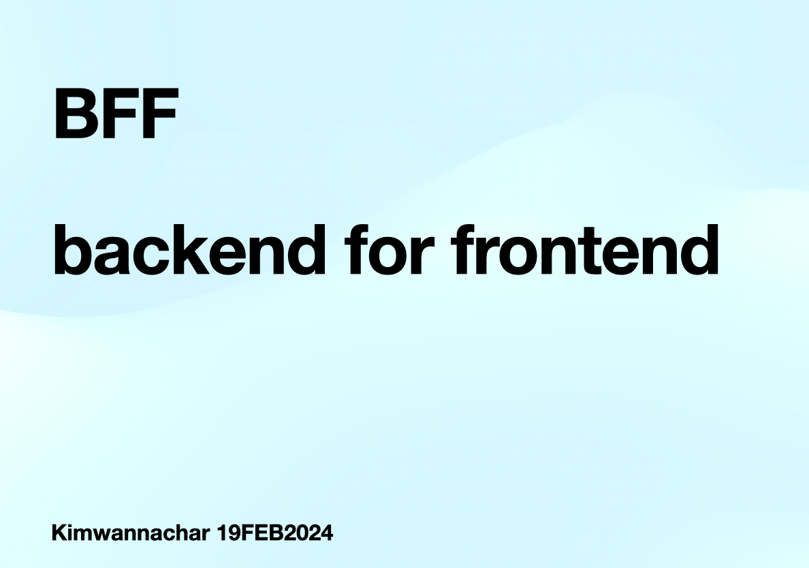
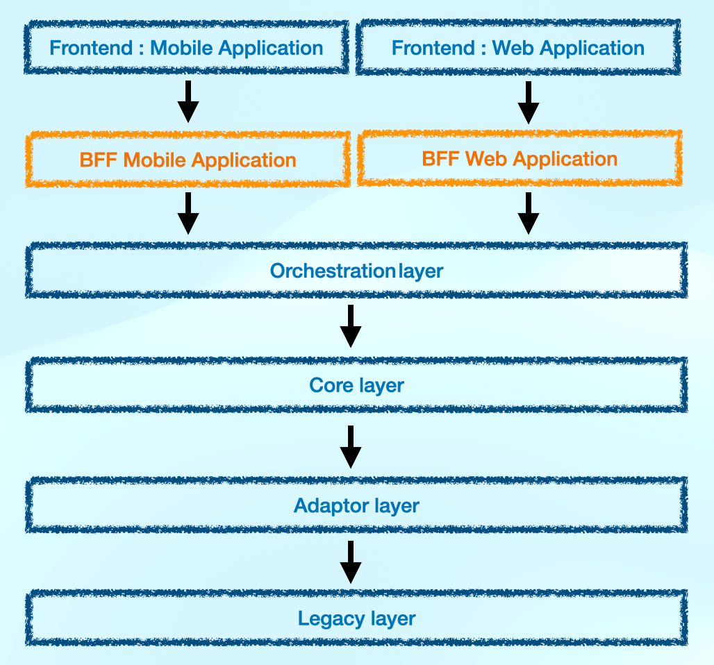

Backend for Frontend (BFF)
เนื่องด้วย ขณะที่กิมเขียนบทความนี้ เป็นจังหวะชีวิตของกิมได้รับมอบหมายให้ทำ customer data integration platfom จึงไม่ได้ทำ application ที่เป็น customer touch point แต่เห็น application ต่างๆ ที่เป็นฝั่ง frontend ได้พูดถึงกันอย่างคึกคัก และนำมาใช้ในการ design architecture กัน ก็เลยเกิดความอยากเห็นอยากรู้ ว่า BFF นั้น คือ อะไร พิเศษอย่างไร มีข้อดี ข้อเสียอะไรบ้าง ก็เลยไปค้นๆ อ่านๆ คุยๆ มา และอยากเล่าให้คนที่ขี้สงสัยเหมือนกันได้รู้ด้วยจากบทความนี้ค่ะ

BFF คือ อะไร
Backend for Frontend เป็นการออกแบบ architecture รูปแบบหนึ่ง และจากการค้นไปเรื่อยของกิม ก็พบว่า คนที่เปิดตัว BFF ครั้งแรกให้ได้รู้จักกัน คือ Phil Calcdo at SoundCloud โดย concept ของการออกแบบนี้จะเป็นการเพิ่ม layer ในส่วนของ BFF มาคั่นกลางระหว่าง frontend กับ backend service ทำให้การรับส่งข้อมูลกันระหว่าง backend to frontend มีความเฉพาะเจาะจงมากขึ้น ซึ่งความเจาะจงนั้น เป็นการออกแบบให้เหมาะสมกับ frontend แต่ละ application เช่น web application, mobile application, web application on tablet/mobile เป็นต้น
BFF พิเศษอย่างไร
ด้วย design BFF architecture pattern นี้ มาตอบโจทย์ในเรื่องของการออกแบบ API ให้ frontend ได้นำของใช้ได้อย่างเฉพาะเจาะจงเหมาะสมกับแต่ละ application ที่มีความต้องการต่างกัน ไม่ว่าจะเป็นจำนวนของข้อมูล ข้อจำกัดในด้าน security และ network ของแต่ละ channel เอง ซึ่งความพิเศษ คือ การจัดส่งของใส่พานให้กับ frontend แบบ personalize frontend centric (อันนี้กิมแอบเลียนแบบ concept: personalize customer centric)

BFF มีข้อดีอะไร
มีข้อดี 5 ข้อที่เป็นเหตุผลที่ BFF เป็นที่นิยมค่ะ (เขียนเอาไว้ใน bff-pattern.com)
1. Adaptability to Platform Requirements: ทำให้ได้ของที่มีความเฉพาะเจาะจงในแต่ละ requirement ของ application ซึ่งในแต่ละ application ก็จะมี limitation ในการใช้งาน service backend ต่างกันออกไป เช่น รูปแบบของข้อมูล, รูปแบบในการ integration ระหว่าง backend/frontend หรือแม้กระทั่งในส่วนของ network และ security ในแต่ละ application ค่ะ
2. Decoupling of Concerns: การแยกกันระหว่างงาน frontend และ backend ทำให้เกิดความชัดเจนในการ develop (อันนี้แอบเห็นด้วยในมุมของการ manage team ที่แยกกันชัดระหว่าง frontend กับ backend developer ค่ะ ทีมก็ได้ทำของที่เข้ามือไปเลย งานก็ออกมาดีตามความถนัด)
3. Flexibility and Maintainability: พอมีการแยก layer ชัดแล้ว service ก็มีความเป็นอิสระ ทำให้ง่ายกับการประเมิน workload ทำให้ scale ได้อย่างแม่นยำ จะปรับปรุงเปลี่ยนแปลงก็มีผลกระทบกับ layer อื่นน้อยลงมากจากความที่ service มีอิสระในตัวเอง
4. Optimized Performance: จากที่เราเตรียมของให้เฉพาะเจาะจงกับ frontend แล้ว ก็ทำให้ผลประกอบการในการรับส่งของกันดีขึ้น ทำให้ performance ของระบบโดยรวม (E2E) ดีขึ้นนั่นเองค่ะ
5. Streamlined API Evolution: เมื่อ BFF ทำให้เกิดความคล่องตัวของ service ทีมพัฒนาของเราก็จะเกิดความคล่องตัวไปด้วย เอื้อให้เพิ่ม ลด ละ เลิก service ต่างๆ ได้ง่ายขึ้นค่ะ
BFF มีข้อเสียอะไร
แน่นอนว่า การเพิ่ม layer คือการเพิ่มงาน และจะต้องมีคนมา provide service ให้เฉพาะเจาะจงแต่ละ application รวมถึง maintenance ซึ่งตรงนี้ ความซับซ้อนก็จะเกิดขึ้นด้วยค่ะ
หวังว่าบทความนี้ จะทำหน้าที่ introduce BFF ได้อ่านสนุกเข้าใจง่ายค่ะ
ขอขอบคุณ แหล่งข้อมูลที่ทำให้เราได้เรียนรู้ไปในทุกวัน
Reference:
https://bff-patterns.com